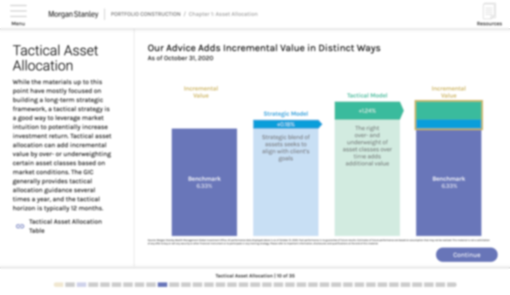

FA Trainings
Note: Images are blurred to comply with Allen Communication's client confidentiality agreement.
I designed, scripted, and developed 63 online courses to train Morgan Stanley Financial Advisors on investing, retirement, business management, among other topics, to help them advance in their careers, no matter their career’s current stage or education level.
Over an 18 month period, I worked as a content creator and instructional designer figuring out how to provide Morgan Stanley Financial Advisors with the tools they needed—both psychologically and technologically—to be successful in their careers, whether their goals were to advance to a higher position, provide better service for their clients, learn a new technology, or prepare for retirement. As part of this role, I frequently met with the client to coordinate our design efforts, and communicated with the other teams—programming, graphic design, and video editing—to ensure we provided a quality product while also meeting our deadlines.
We constantly faced two challenges with these courses:
My role with Morgan Stanley grew out of necessity over the course of two years. Starting in late 2019, I filled the role of part-time Instructional Writer, acting as an assistant to the Instructional Designer over Morgan Stanley. After a few months, I took over the Morgan Stanley account as a full time eLearning Developer, filling the role of both Writer and Instructional Designer. As an eLearning Developer, my responsibilities fell into three main categories:
The courses I created have been taken by over 25,000 Morgan Stanley employees across two continents, and over 10,000 have received specialized certifications that have allowed them to obtain promotions, grow their businesses and income.